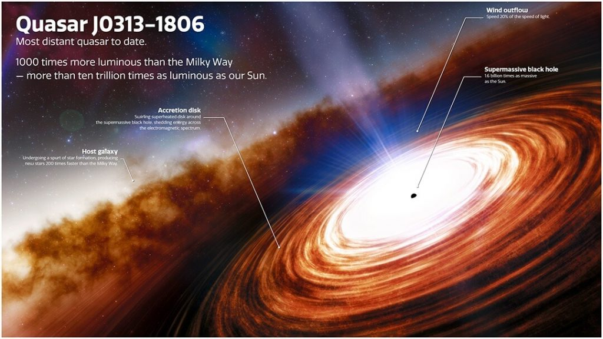

ကွေဆာ Quasar ဆိုတာဘာလဲ
Quasar ဆိုတဲ့ စကားလုံးဟာ quasi-stellar radio source (ကြယ်နှင့် ဆင်ဆင်တူသော ရေဒီယိုလှိုင်း ထုတ်လွှတ်ရာ ပင်ရင်း) ဆိုတဲ့ စကားစုရဲ့ အတိုကောက် ဖြစ်ပါတယ်။ ကွေဆာ တွေဟာ ဒီအမည် ဘာလို့ ရလာတာလဲ ဆိုတော့ သူတို့ကို စတွေ့စက ဒီ အရာဝတ္ထုတွေဟာ ကြယ်တွေနဲ့ ခပ်ဆင်ဆင် တူတယ်လို့ ထင်ခဲ့ကြလို့ပဲ ဖြစ်ပါတယ်။သူတို့က ၁၉၅၀ ကျော် နှစ်တွေ အတွင်းမှာ စတင်ပြီး နက္ခတ် ပညာရှင်တွေ သတိပြုမိ ခဲ့ကြတာ ဖြစ်ပါတယ်။ မူလက သူတို့ကို ထူးဆန်းတဲ့ ကြယ်တွေလို့ ထင်ခဲ့ကြပါတယ်။ ဒါပေမယ့် နောက်ပိုင်း ဒီ အရာဝတ္ထုတွေဟာ ကြယ်တွေ မဟုတ်ဘူး ဆိုတာကို သိလာရပါတယ်။
အခုအချိန်မှာတော့ ဒီ ကွေဆာ တွေဟာ ကြယ်တွေ မဟုတ်ပဲ သက်တမ်းနု ဂလက်ဆီ ကြယ်စုတွေ ဆိုတာကို သိလာကြပါတယ်။ ဒီ ကွေဆာတွေဟာ ကမ္ဘာကနေဆို အလွန် အင်မတန် ဝေးကွာတဲ့ အရပ်တွေမှာ တည်ရှိကြတာပါ။ အထူးသဖြင့် ကမ္ဘာက လှမ်းပြီး မြင်တွေ့ လေ့လာနိုင်တဲ့ စကြာဝဠာ (observable universe) ရဲ့ အစွန်းနား ရောက်သွားလေလေ အရေအတွက် များလာလေလေ ဆိုတာကိုလဲ တွေ့ရှိ ခဲ့ကြပါတယ်။
ဒီလောက် ဝေးတဲ့ နေရာက ကွေဆာတွေကို ဘယ်လိုလုပ်ပြီး မြင်နိုင်သလဲလို့ မေးစရာ ရှိပါတယ်။
အဖြေကတော့ ကွေဆာတွေဟာ အရမ်းကို အလင်းရောင် တောက်ပကြ လို့ပဲ ဖြစ်ပါတယ်။ ဒီ ကွေဆာတွေရဲ့ အလင်းရောင် တောက်ပမှုဟာ ကျွန်တော်တို့ မစ်ကီးဝေး ဂလက်ဆီ ကြီးတစ်ခုလုံးရဲ့ တောက်ပမှုထက် အဆပေါင်း ၁,၀၀၀ လောက်ထိ တောက်ပ ကြပါတယ်။
ဒီလောက် တောက်ပနေတဲ့ အတွက် ဒီ ကွေဆာ တွေဟာ အလွန်ကို လှုပ်ရှားမှု များပြားပြီး လျှပ်စစ်သံလိုက် လှိုင်းသံစဉ် (electromagnetic spectrum) အားလုံး အတွင်းမှာ ပြင်းထန်တဲ့ ရောင်ခြည်တွေ အမြောက်အများ ထုတ်လွှတ် ပေးနေတယ် ဆိုတာကိုလဲ ရှာဖွေ တွေ့ရှိ ခဲ့ကြပါတယ်။ (လျှပ်စစ်သံလိုက် ရောင်စဉ်မှာ သာမန် ရေဒီယို လှိုင်းကစပြီး မိုက်ကရိုဝေ့ လှိုင်း၊ အနီအောက် ရောင်ခြည်၊ အလင်းရောင်စဉ်၊ ခရမ်းလွန် ရောင်ခြည်၊ X-ray ဓါတ်မှန်ရောင်ခြည် နဲ့ ဂါမာ ရောင်ခြည်တွေ အထိ ပါဝင်ပါတယ်။)
ဒီ ကွေဆာ တွေဟာ အလွန် ဝေးကွာတဲ့ အရပ်မှာ ရှိနေတာမို့ သူတို့ဆီက အလင်း ကမ္ဘာကို ရောက်ဖို့လဲအချိန် အကြာကြီး နေမှ ရောက်မှာ ဖြစ်ပါတယ်။ ဒီတော့ ဒီ ကွေဆာ တွေဆီက ကမ္ဘာကို အခု ရောက်လာတယ် ဆိုတဲ့ လှိုင်းတွေဟာ လွန်ခဲ့တဲံ အတိတ်က ရောင်ခြည်တွေ အခုမှ ရောက်လာတာ ဖြစ်ပါတယ်။
တနည်း အားဖြင့်တော့ ကွေဆာတွေကို မြင်ရတာသည် စကြာဝဠာ စဖြစ်တည် စမှာ ရှိနေခဲ့တဲ့ အခြေအနေ တွေကို လှမ်းမြင်ရတာ လို့ ဆိုနိုင်ပါတယ်။
အခုထိ တွေ့ခဲ့ ဖူးသမျှ ကွေဆာတွေ ထဲမှာ အဝေးဆုံး ကွေဆာဟာ ကမ္ဘာကနေ အလင်းနှစ် ၁၃.၀၃ ဘီလီယံ အကွာမှာ ရှိပါတယ်။ တနည်းအားဖြင့် ဒီ ကွေဆာဟာ Big Bang မဟာပေါက်ကွဲမှု ကြီး ဖြစ်အပြီး နှစ်သန်း ၆၇၀ ပဲ ရှိသေးတဲ့ ကာလက ကွေဆာ ဖြစ်ပါတယ်။
ဒါဆို အဲ့သည် အချိန်က ဖြစ်ပေါ် ခဲ့တဲ့ ကွေဆာတွေဟာ ဘာလို့ အရမ်း အလင်းရောင် တောက်ပနေ ခဲ့ရတာလဲ။ အဲ့သည် အချိန်က စကြာဝဠာ ထဲမှာ ကွေဆာတွေကို အလင်းရောင် တောက်ပစေမယ့် ဖြစ်စဉ် တစ်ခုခု ရှိ ခဲ့လို့များလား။

ဂလက်ဆီရဲ့ ဗဟိုချက်
ကွေဆာ တွေဟာ ဂလက်ဆီ တွေရဲ့ အလွန် တောက်ပတဲ့ ဗဟိုချက်တွေ ဖြစ်ကြတယ်လို့ လက်ရှိ နက္ခတ် ပညာရှင် တွေက ယုံကြည် ကြပါတယ်။ကွေဆာတွေကို ဆယ်စုနှစ်ပေါင်း များစွာ လေ့လာခဲ့ အပြီးမှာတော့ ဒီ အရာဝတ္ထုတွေကို ခေါ်ဝေါ်တဲ့ အမည်သစ် တစ်မျိုးကို နက္ခတ် ပညာရှင် တွေက အဆို ပြုခဲ့ ကြပါတယ်။ ဒီ အမည်ကတော့ active galactic nucleus ဆိုတဲ့ အမည်ပဲ ဖြစ်ပါတယ်။ မြန်မာလိုတော့ “လှုပ်ရှား သက်ဝင်နေသော ဂလက်ဆီ ကြယ်စု၏ ဗဟိုချက်” လို့ အနီးစပ်ဆုံး ပြန်ရပါမယ်။
လက်တွေ့မှာတော့ ကွေဆာ အမျိုးအစား မြောက်များစွာ ရှိပါတယ်။ အမျိုးအစား တစ်ခုနဲ့ တစ်ခုလဲ မတူညီ ကြပါဘူး။ ဒါပေမယ့် ဒီကွေဆာတွေ အားလုံးမှာ တူညီနေတဲ့ အချက်ကတော့ သူတို့ အားလုံးရဲ့ အလယ်ဗဟိုမှာ အလွန် အင်မတန် ကြီးမားတဲ့ ဧရာမ Supermassive black hole တွင်းနက် ကြီးတွေ ရှိနေကြတယ် ဆိုတာပဲ ဖြစ်ပါတယ်။
ကွေဆာတွေ ကနေ အင်းအား အဆမတန် ပြင်းထန်တဲ့ ရေဒီယို လှိုင်းပေါင်းစုံ ထွက်ပေါ်လာ ကြပါတယ်။ ဒီ လှိုင်းတွေဟာ မဟာ တွင်းနက်ကြီးရဲ့ ပတ်ခြာလည်က တွင်းနက်ထဲကို စီးဝင်နေတဲ့ ဓါတ်ငွေ့တွေ ကနေ ထွက်လာတာ ဖြစ်ပါတယ်။
ဒီ ဓါတ်ငွေ့တွေဟာ တွင်းနက်ကြီး ထဲကို ဝဲဂယက် ကြီး တစ်ခုလို (accretion disk) အဖြစ် စီးဝင် သွားကြပါတယ်။ ဒီလို စီးဝင်တဲ့ အခါမှာ ဓါတ်ငွေ့ မော်လီကျူးတွေ၊ ဖုန်မှုန့်တွေ နဲ့ အခြား အရာဝတ္ထုတွေ တစ်ခုနဲ့ တစ်ခု ပွတ်မိရာက အရမ်းကို ပူပြင်း လာကြပါတယ်။ ဘယ်လောက်တောင် ပူလာသလဲ ဆိုရင် အပူချိန် ဒီဂရီ စင်တီဂရိတ် သန်းချီအောင် ပူပြင်း လာကြတာပါ။
ဒီ ကွေဆာထဲကို စီးဝင်နေတဲ့ ဓါတ်ငွေ့တွေ ထဲမှာ အများစုက ဟိုက်ဒြိုဂျင် ဓါတ်ငွေ့တွေ ဖြစ်ကြပါတယ်။ ဟိုက်ဒြိုဂျင် ဆိုတာက စကြာဝဠာရဲ့ အခြေခံ အကျဆုံး ဒြပ်ပစ္စည်း ဖြစ်ပြီး အပေါများဆုံး ဒြပ်ဝတ္ထုလဲ ဖြစ်ပါတယ်။ အထူးသဖြင့် သက်တမ်းနု စကြာဝဠာ ထဲမှာ ဟိုက်ဒြိုဂျင်တွေ အမြောက်အများ ရှိနေပါတယ်။
ဒီတော့ စကြာဝဠာ အစောပိုင်း ကာလက ကွေဆာတွေရဲ့ ဗဟိုက မဟာ တွင်းနက် ကြီးတွေအတွက် လိုအပ်တဲ့ ဓါတ်ငွေ့တွေကို ပေါပေါများများ အလွယ် တကူ ရရှိနိုင် ကြပါတယ်။
ဒီလို တွင်းနက် ပတ်လည်က ဝဲဂယက် ထဲက ဓါတ်ငွေ့တွေ အပူချိန် ပြင်းထန်လာတဲ့ အခါ ထွက်လာတဲ့ စွမ်းအင် တွေဟာ လျှပ်စစ် သံလိုက် လှိုင်း (radio magnetic waves) တွေ အနေနဲ့ ထွက်လာကြတာပါ။ အထူးသဖြင့် ရေဒီယို လှိုင်းတွေ၊ ခရမ်းလွန် ရောင်ခြည်တွေ၊ အလင်းရောင်စဉ် နဲ့ X-ray ရောင်ခြည်တွေ အများအပြားထွက်လာ ကြပါတယ်။
ကွေဆာတွေက ထွက်တဲ့ အလင်းဟာ အရမ်းကို တောက်ပ နေတာမို့ သူရှိနေတဲ့ ဂလက်ဆီ ထဲက အခြားကြယ်တွေရဲ့ အလင်းရောင်ကိုတောင် လွှမ်းမိုး သွားပါတယ်။ ဒါပေမယ့် ကွေဆာတွေဟာ အလွန် ဝေးကွာတာမို့ ဒီ ကွေဆာ တွေက အလင်း ကမ္ဘာကို ရောက်တဲ့ အချိန်မှာတော့ အတော်လေး အလင်းရောင် မှိန်သွားပါပြီ။
ကွေဆာတွေဟာ အရမ်း ဝေးတာမို့ ကမ္ဘာကနေ ကြည့်ရင် ဒီ ကွေဆာ ရှိနေတဲ့ ဂလက်ဆီ ကြီး တစ်ခုလုံးကို မမြင် ကြရတော့ပါဘူး။ ကျွန်တော်တို့ ဆီကနေ ကြည့်ရင် မြင်ရတာက ဒီ ဂလက်ဆီ တွေရဲ့ အလယ်ဗဟို အူတိုင်က ထွက်လာတဲ့ အလင်းရောင်ကိုပဲ မြင်ကြရတာပါ။
ကွေဆာတွေ ကနေ ထွက်လာတဲ့ အလင်းနဲ့ အခြား စွမ်းအင်တွေဟာ အလွန်ပဲ ပြင်းထန်ပါတယ်။ ဥပမာကျွန်တော်တို့ နေ နေရာမှာသာ ကွေဆာ တစ်လုံး ရှိနေမယ် ဆိုရင် ကမ္ဘာပေါ်က သမုဒ္ဒရာ ရေအားလုံးဟာ တစ်စက္ကန့်ရဲ့ ၅ ပုံ ၁ ပုံတောင် မရှိတဲ့ ကာလတို လေးအတိုင်းအတာ လေး အတွင်းမှာ ချက်ချင်း အငွေ့ပျံ သွားမယ်လို့ ဆိုပါတယ်။
ကွေဆာ တစ်လုံးက ပျမ်းမျထွက်တဲ့ အလင်းဟာ နေ အလုံးပေါင်း ၂၇ ထရီလီယံ ( ၁ ထရီ လီယံ = ၁၀၀၀ ဘီလီယံ = ၁,၀၀၀,၀၀၀,၀၀၀,၀၀၀) က ထွက်တဲ့ အလင်းအားနဲ့ တူညီပါတယ်။ ကျွန်တော်တို့ မစ်ကီးဝေး ဂလက်ဆီ ထဲမှာ ရှိတဲ့ ကြယ်အားလုံးပေါင်း အလုံး ဘီလီယံ ၂၀၀ (သန်း နှစ်သိန်း) က ထွက်တဲ့အ လင်းထက် အဆ ၁,၀၀၀ လောက် ပိုလင်းပါတယ်။

ဂလက်ဆီများ၏ ဆင့်ကဲဖြစ်စဉ်
နက္ခတ် ပညာရှင် တွေက ဂလက်ဆီ အများစုဟာ သူတို့ သက်နုစဉ် ကာလက “ကွေဆာ” တွေ အဖြစ် အချိန်ကာလ အတိုင်းအတာ တစ်ခုကို ဖြတ်သန်းခဲ့ ကြတယ်လို့ ယူဆကြ ပါတယ်။ ဒီ ကာလမှာ သူတို့ရဲ့ ဗဟိုက မဟာ တွင်းနက်တွေဟာ အနီးပတ်ဝန်းကျင်က ဟိုက်ဒြိုဂျင်နဲ့ အခြား ဓါတ်ငွေ့တွေ၊ ဖုန်မှုန့်တွေကို စုပ်ယူကြီး ကြီးထားလာ ကြပါတယ်။ဒီ မဟာတွင်းနက် တွေ အနီးမှာ ဆက်လက် စုပ်ယူစရာ ဓါတ်ငွေ့တွေ ကုန်သွားတဲ့ အခါမှာတော့ မဟာ တွင်းနက်ကြီးတွေဟာ အရောင် မှေးမှိန်ပြီး မှောင်မဲ သွားကြပါတယ်။ ရံဖန် ရံခါ အနားက ဖြတ်သွားတဲ့ ဓါတ်ငွေ့ တိမ်တိုက်တွေ၊ ကြယ်တွေ တွင်းနက်ထဲ ပြုတ်ကျတဲ့ အခါမျိုးမှာ ခနတဖြုတ် အလင်းရောင် ထတောက်တာက လွဲလို့ ကျန်အချိန်တွေမှာ မှောင်မဲနေတဲ့ တွင်းနက်တွေ အဖြစ်ပဲ ဆက်လက် ရှင်သန်နေ ကြပါတယ်။
ဥပမာ မစ်ကီးဝေးရဲ့ ဗဟိုက Sagittarius A* မဟာ တွင်းနက်ကြီးဟာ လွန်ခဲ့တဲ့ နှစ် ၃.၅ သန်းခန့်က ရုတ်တရက် ဓါတ်ငွေ့တွေ ပေါက်ကွဲ ထွက်ခဲ့ပါတယ်။ ဒီ ပေါက်ကွဲမှုက ကျွင်းကျန်ရစ်တဲ့ ပူပြင်းတဲ့ ဓါတ်ငွေ့တွေကို မစ်ကီးဝေးရဲ့ ဗဟိုကနေ တစ်ဖက် တစ်ချက်စီမှာ ဘောလုံးကြီး နှစ်လုံး အသွင် မြင်တွေ့ ကြရပါတယ်။
ကွေဆာတွေနဲ့ ပါတ်သက်ပြီး ဆယ်စုနှစ်ပေါင်း များစွာ လေ့လာခဲ့ ပေမယ့် ယခုအထိ သူတို့နဲ့ ပါတ်သက်လို့ မသိသေးတာတွေ အများကြီး ကျန်နေပါသေးတယ်။ ဒီ ပဟေဠိ တွေကို ဖော်ထုတ်နိုင်မယ် ဆိုရင် စကြာဝဠာရဲ့ အစောပိုင်း ကာလတွေနဲ့ ပါတ်သက်လို့ ပိုပြီး သိရှိ နားလည် လာကြလိမ့်မယ်လို့ နက္ခတ် ပညာရှင် တွေက ယုံကြည် ကြပါတယ်။
Reference:
What is a quasar? | Earth Sky
Quasars: Brightest Objects in the Universe | Space
Quasar | Britannica